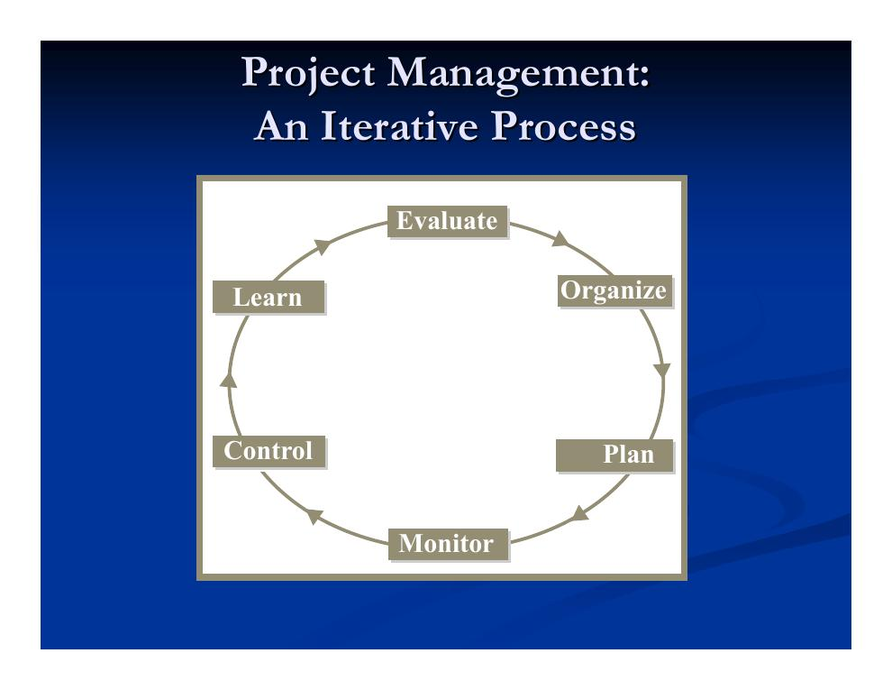
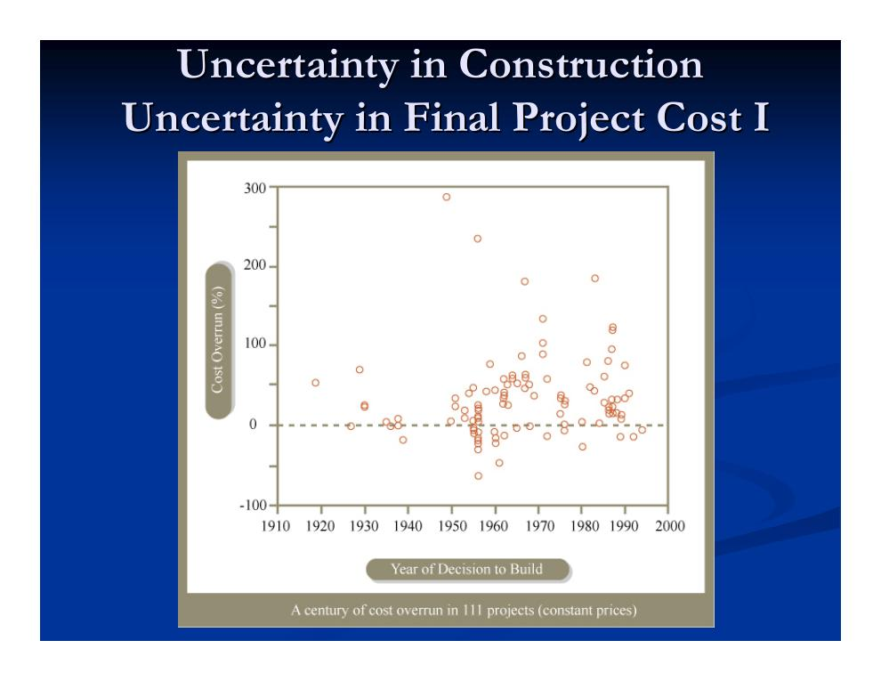
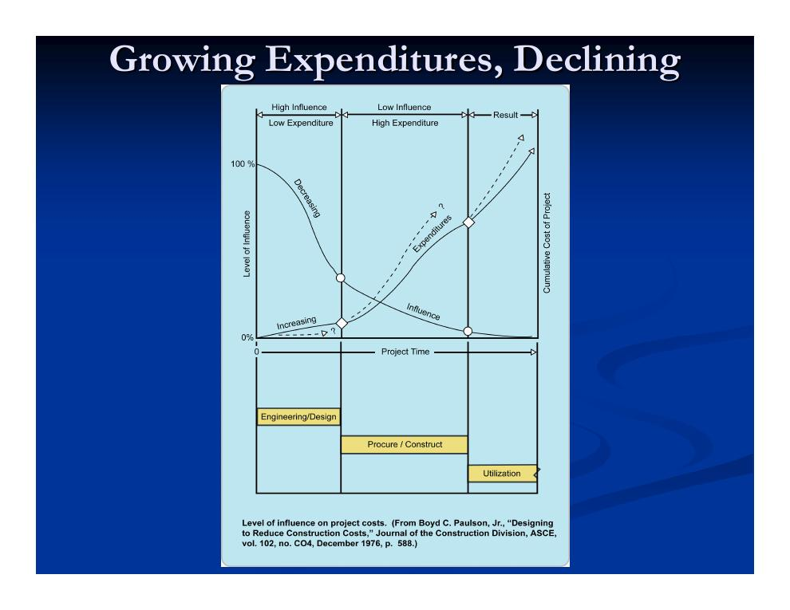
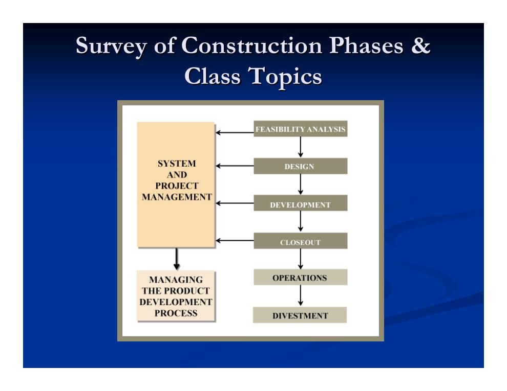
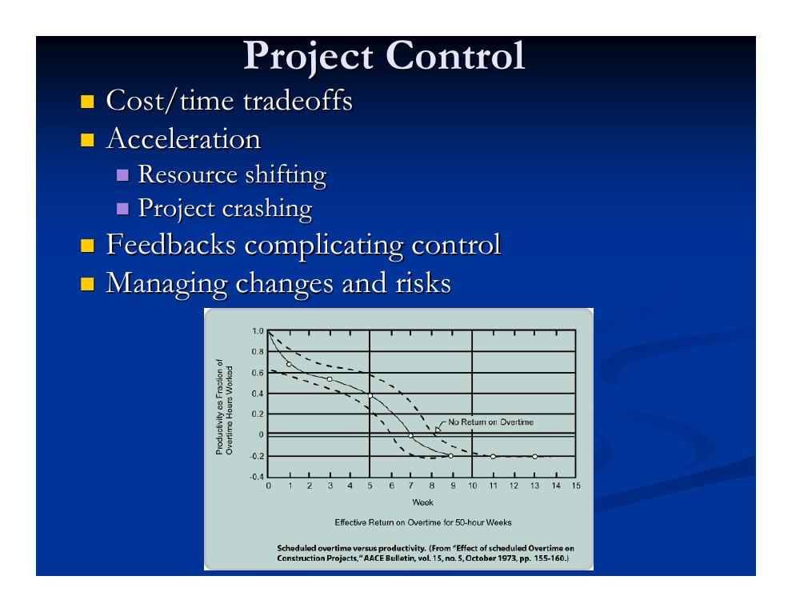
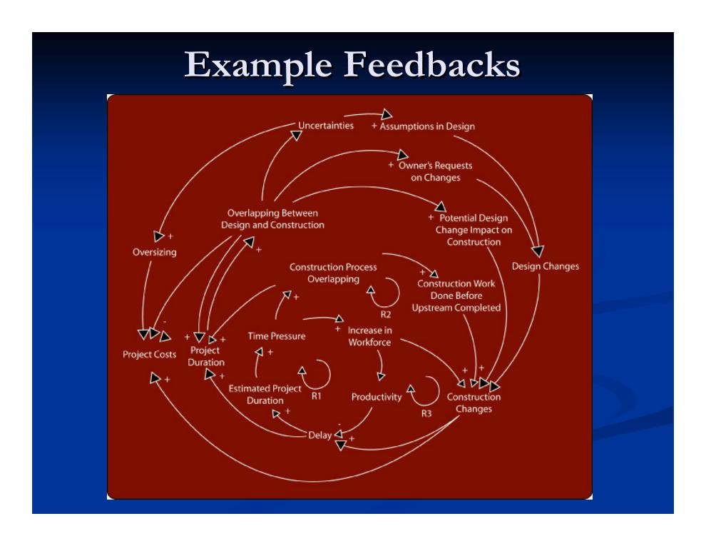

Ziel des Kurses: Das Kompetenzprofil eines Projektmanagers
Der Kurs will Fachleute in der Kunst und Wissenschaft ausbilden, menschliche, maschinelle, materielle und finanzielle Ressourcen so zu lenken und zu koordinieren, dass ein Projekt entsteht, bei dem den Projektdetails größtmögliche Aufmerksamkeit auf möglichst kosteneffiziente Weise gewidmet wird – ohne dabei den Blick für das Gesamtprojekt zu verlieren.
Dazu sollen sechs Fähigkeiten gezielt gestärkt werden:
- Fachlich-technische Kompetenz
- Kommunikationsfähigkeit
- Entscheidungskompetenz
- Problemlösungskompetenz
- Zwischenmenschliche Kompetenz
- Führungskompetenz
Kursorganisation im Überblick
Der Originalkurs (MIT 1.040/1.401, Frühjahr 2004, Dr. Nathaniel Osgood) kombiniert Vorlesungen, Übungen und ein durchgehendes Semesterprojekt. Die wichtigsten Eckdaten:
- Analytischer Teil (Vorlesungen, Lektüre, Aufgabenblätter): Werkzeuge für den Umgang mit Komplexität und Unsicherheit – so vermittelt, dass man die zugrunde liegenden Annahmen und Schwächen versteht und künftige Entwicklungen im Bauwesen einordnen kann.
- Qualitativer Teil (Übungsstunden mit Praxisbezug): empirische Befunde und der aktuelle Stand der Baupraxis, u. a. mit Gastvorträgen zu Megaprojekt-Organisation und -Steuerung, Verhaltensaspekten und Fassaden-Terminplanung.
- Semesterprojekt in vier Teilen (iterativer Prozess, Abschlussbericht und Präsentation):
- TP 1: Projektauswahl bzw. -zuweisung
- TP 2: Kostenschätzung, Angebot, Mobilisierungsplan und Projektorganisation
- TP 3: Projektplanung, -überwachung und -steuerung
- TP 4: Nachforderungen (Claims), Projektabschluss und Projektlernen
- Software: Primavera P3 (deterministische Termin- und Ressourcenplanung), Primavera Monte Carlo (probabilistische Planung), TreeAge (Entscheidungs- und Risikoanalyse), Vensim (System-Dynamics-Analyse).
- Literatur: System & Project Management (Peña-Mora u. a.) als allgemeine Einführung, Construction Project Management (Hendrickson & Au) für die quantitativen Teile sowie Construction Nightmares mit Fallgeschichten zu den Kursprinzipien.
Für dieses Lernprogramm gilt: Die Inhalte der 18 Vorlesungen sind vollständig in die Kapitel 1.1 bis 6.2 übernommen; das Semesterprojekt bildet der Bereich Semesterprojekt ab.
Projektmanagement als iterativer Prozess
Projektmanagement ist kein linearer Ablauf, sondern ein Kreislauf aus sechs Tätigkeiten, die sich über die Projektlaufzeit ständig wiederholen: Bewerten (Evaluate) → Organisieren (Organize) → Planen (Plan) → Überwachen (Monitor) → Steuern (Control) → Lernen (Learn) – und wieder von vorn.

Der Projektumfang (Project Scope) – das, was gemanagt werden muss – umfasst dabei fünf Dimensionen:
- Zeit / Terminplan
- Kosten / Budget
- Natürliche Umwelt
- Politisch-gesellschaftliches Umfeld
- Qualität
Die Bauwirtschaft: Kontext und Beteiligte
Bauprojekte finden unter Bedingungen statt, die sie von der stationären Industrie deutlich unterscheiden:
- Viele Fachdisziplinen arbeiten zusammen; das Projektteam ist jeweils einmalig und verändert sich im Projektverlauf.
- Projekte sind in der Regel Unikate mit hohen gesellschaftlichen, politischen und ökologischen Auswirkungen.
- Die Entwürfe werden immer anspruchsvoller.
- Hoher Zeitdruck, hoher Kostendruck (geringe Margen), hohe Komplexität, große Unsicherheit bei Kosten, Terminen und Qualität, hohe Personalfluktuation sowie viel Konflikt und Rechtsstreit (Nachforderungen machen rund 1 % der Baukosten aus).
Zugleich ist die Branche volkswirtschaftlich bedeutend (Zahlen für die USA, 2004): Bauleistung über 850 Mrd. $, rund 8 % des BIP, etwa 700.000 Bauunternehmen – 90 % davon mit weniger als 10 Beschäftigten. Der Hochbau stellt 70–80 % des Marktes; Sektoren sind Wohnungsbau, Wirtschaftsbau, Industriebau sowie Infrastruktur- und Ingenieurbau, flankiert von Planungsdienstleistern, Lieferanten und Finanzdienstleistern.
Die drei zentralen Parteien verfolgen dabei unterschiedliche Interessen – eine Hauptquelle für Konflikte:
- Bauherr (Owner)
- Gibt das Projekt in Auftrag und organisiert die Finanzierung. Typische Motive: gute Gestaltung, Geld sparen, schnell fertig werden.
- Planer (Designer – Architekten und Ingenieure)
- Entwirft das Bauwerk (meist gemeinsam mit dem Bauherrn) und überwacht häufig die Ausführung. Typische Motive: Anerkennung, zufriedener Auftraggeber.
- Bauunternehmer (Contractor)
- Errichtet das Bauwerk (oft mit Planungsunterstützung). Typische Motive: Gewinn erzielen, schnell fertig werden, zufriedener Auftraggeber.
Unsicherheit und Kostenüberschreitungen
Warum braucht es überhaupt systematisches Projektmanagement? Die empirische Antwort: Weil Bauprojekte seit jeher massiv unter Kostenunsicherheit leiden. Eine Auswertung von 111 Großprojekten über ein Jahrhundert zeigt Kostenüberschreitungen von bis zu fast 300 % – ohne erkennbare Verbesserung über die Jahrzehnte.

Auch berühmte Einzelprojekte belegen das Muster:
| Projekt | Kostenüberschreitung (%) |
|---|---|
| Suezkanal | 1.900 |
| Oper von Sydney | 1.400 |
| Überschallflugzeug Concorde | 1.100 |
| Panamakanal | 200 |
| Brooklyn Bridge | 100 |
Quellen: Peter Hall, Great Planning Disasters Revisited; Robert Summers, Cost Estimates as Predictors of Actual Costs (in Marschak u. a., Strategy for R&D, 1967); Mette K. Skamris, Economic Appraisal of Large-Scale Transport Infrastructure Investments (Diss., Aalborg 2000). Die Streuung der Schätzabweichungen ist zudem je nach Projekttyp (Kläranlagen, Gebäude, Verkehr, Entwässerung) sehr unterschiedlich groß.
Ein zweiter Grundzusammenhang erklärt, warum frühe Projektphasen so wichtig sind: Der Einfluss auf die Projektkosten ist zu Beginn (Planung/Entwurf) am größten und sinkt rapide, während die Ausgaben erst in der Bau- und Beschaffungsphase stark ansteigen. Wer steuern will, muss also früh steuern.

Die Kursthemen entlang der Projektphasen
Der Kurs folgt dem Lebenszyklus eines Bauprojekts: Machbarkeitsanalyse → Planung/Entwurf → Ausführung → Abschluss (danach Betrieb und Verwertung). Das System- und Projektmanagement begleitet alle diese Phasen.

Machbarkeitsstudien und Vorbereitungen (→ Lerneinheiten 1–2)
- Projektfinanzierung und -bewertung verstehen – die wirtschaftlichen Zwänge von Bauherr und Unternehmer (Finanzierungsformen, Zeitwert des Geldes, Barwert, Discounted-Cash-Flow-Analyse, Bewertungsmaße wie NPV und IRR, Kosten-Nutzen- und Kostenwirksamkeitsanalyse, MARR und WACC – alles Gegenstand der Kapitel 1.2 und 1.3).
- Risiken verstehen und managen – Risikoprämien, Anreize, Entscheiden unter Unsicherheit (Kapitel 1.4): Risikoidentifikation, -klassifikation und -minderung, Grundlagen der Entscheidungsanalyse mit Entscheidungsbäumen, Risikoeinstellung, Präferenzen sowie Risikoquellen im Bauwesen mit Schwerpunkt auf Änderungen und Nachforderungen.
- Vertragsgrundlagen festlegen (Lerneinheiten 2–3): Abwicklungsmodell (Delivery Method – wie wird organisiert? z. B. Design-Bid-Build, Design-Build, Turnkey, BOT, mehrere Hauptunternehmer), Vergabeverfahren (Award Method – wie wird ausgewählt? niedrigster Preis, Mehrparameter-Verfahren, Verhandlung), Vertragstyp (Contract Type – wie wird bezahlt? Pauschalpreis, Selbstkostenerstattung mit Zuschlag, garantierter Maximalpreis) sowie Vertragsgestaltung (Leistungsumfang, Risikoteilung, Streitbeilegung, Vorkehrungen gegen Nachforderungen).
Entwurfsphase (→ Lerneinheiten 3–4)
- Planer und Bauherr definieren Umfang, Budget und Termine; es entstehen aufeinanderfolgende, immer genauere Kostenschätzungen (vorläufiges Finanzierungsmodell, Vorentwurf, Entwurf, Vertrag) mit parametrischen Methoden und Mengenermittlung (Quantity Takeoff), deterministisch und probabilistisch, ergänzt um Projektbudgetierung und Lebenszykluskosten.
- Deterministische Terminplanung: Balkenplan (Gantt), Netzplantechniken CPM und PDM mit Kritikalität, Aktivitätenteilung und typischen Fallstricken – unverzichtbar für die Durchdringung des Bauablaufs, das Jonglieren vieler Vorgänge und Ressourcen, Aussagen zu Kosten und Fertigstellungstermin, Überwachung und Steuerung sowie als Beweismittel im Streitfall. Dazu: abschnittsweises Bauen und Fast-Track.
- Probabilistische Terminplanung: PERT, Monte-Carlo-Simulation, GERT und Q-GERT, dynamische Planungsmethodik.
- Ressourcenplanung: Budgetmanagement, Einsatzplanung von Personal, Flächen, Geräten und Material, Kosten-Ressourcen-Abwägungen, Taktplanung (Line-of-Balance), Qualitätssicherung.
- Mögliche Rollen des Bauunternehmers schon im Entwurf: Value Engineering (Wertanalyse, auch mit Blick auf Flexibilität) und Baubarkeitsanalyse (Constructibility Analysis).
Ausführung: Überwachung und Steuerung (→ Lerneinheit 5)
- Projektüberwachung: Leistungskategorien, Earned-Value-Ansatz (Fertigstellungswertmethode), Fortschrittsberichte, Lerneffekte, Kosten- und Terminüberwachung, Reviews und Audits.
- Projektsteuerung: Kosten-Zeit-Abwägungen und Beschleunigung (Ressourcenverschiebung, „Crashing"), Rückkopplungen, die die Steuerung erschweren, sowie das Management von Änderungen und Risiken.
- Steuerung von Nachforderungen und Änderungen: Prinzipien zur Schadensbegrenzung, Konflikteskalation, Streitbeilegung, Abrufverträge, Verzugsansprüche und die Dynamik von Nachforderungen.

Die Steuerung wird durch systemische Rückkopplungen erschwert: Änderungen erzeugen Nacharbeit und wirken auf Qualität, Kosten und Termine zurück; Überstunden senken Qualität und Produktivität; Fast-Track macht das Projekt empfindlicher und verwundbarer. Diese Dynamik behandelt Lerneinheit 5 vertieft.

Projektabschluss (→ Lerneinheit 6)
- Wesentliche Fertigstellung (Substantial Completion) und Endabnahme
- Vertragsbeendigung (Termination)
- Abschluss (Close-Out) mit Dokumentation
- Gewährleistung und Garantien
Wiederkehrende Themen und Leitbild
Sieben Themen ziehen sich als roter Faden durch alle 18 Vorlesungen:
- Komplexität
- Leistung – gemessen in Geld, Zeit und Qualität
- Unsicherheit und Risiko
- Flexibilität
- Anreize
- Konflikt
- Die entscheidende Rolle qualitativer wie quantitativer Faktoren